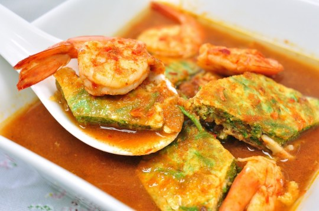

พื้นที่ติดชายฝั่งทะเล ลักษณะภูมิประเทศเป็นแหลมยื่นลงไปในทะเล ประชากรส่วนใหญ่จึงนิยมทำประมง ด้วยเหตุนี้อาหารหลักของภาคใต้จึงเป็นอาหารทะเลสด และนิยมใช้เครื่องเทศในการปรุงอาหาร รสชาติจะเผ็ดร้อน เค็มและเปรี้ยว เช่น แกงไตปลา แกงส้ม และ เป็นต้น อาหารภาคใต้นิยมทานควบคู่กับผักเพื่อช่วยลดความเผ็ดร้อนลง ซึ่งเรียกว่า ผักเหนาะ เช่น มะเขือเปราะ ถั่วฝักยาว ถั่วพู สะตอเป็นต้น |
||
| แกงไตปลา |  | |
|---|---|---|
| แกงส้ม | ||
| แกงเหลือง | ||
 |
 |
 |